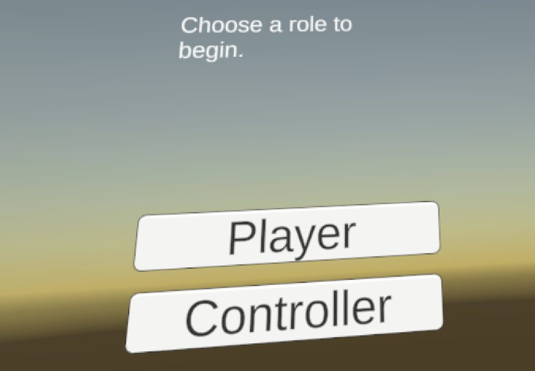
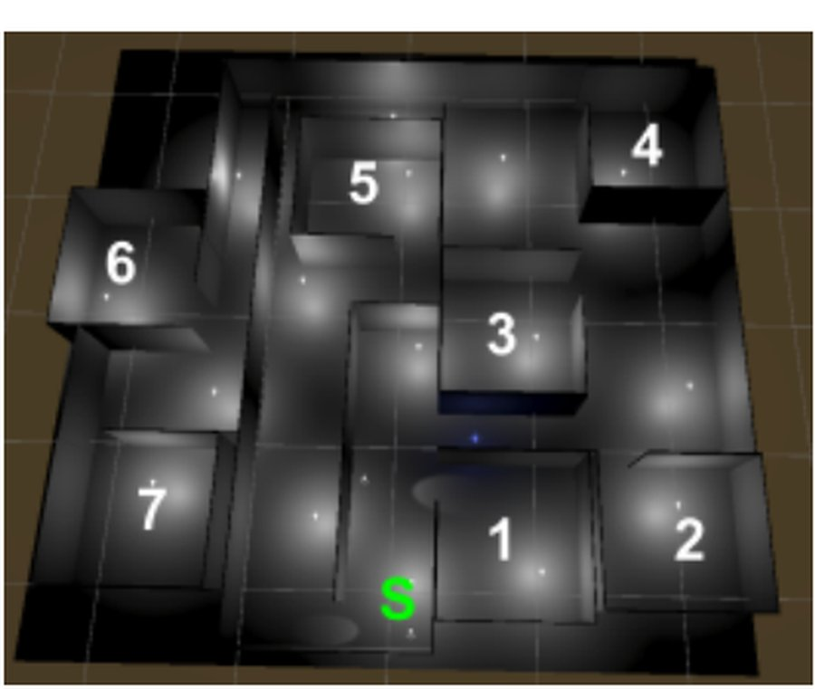
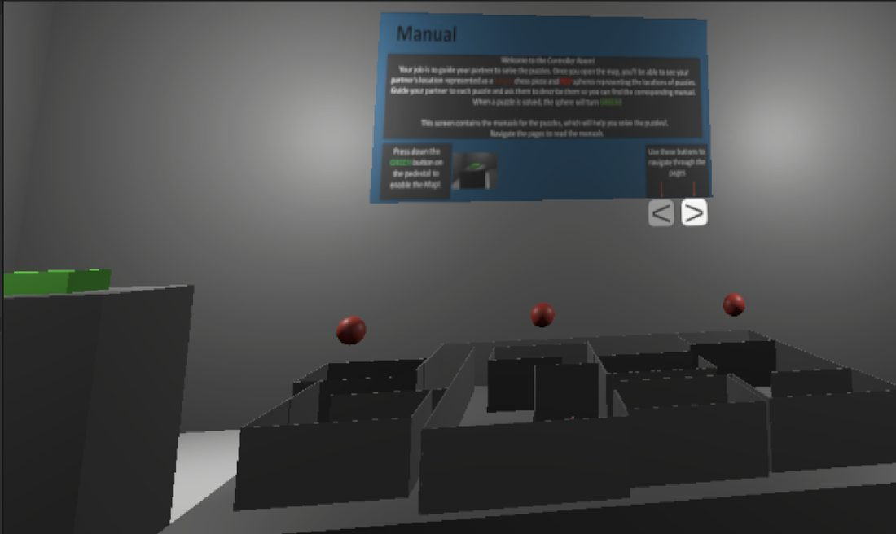
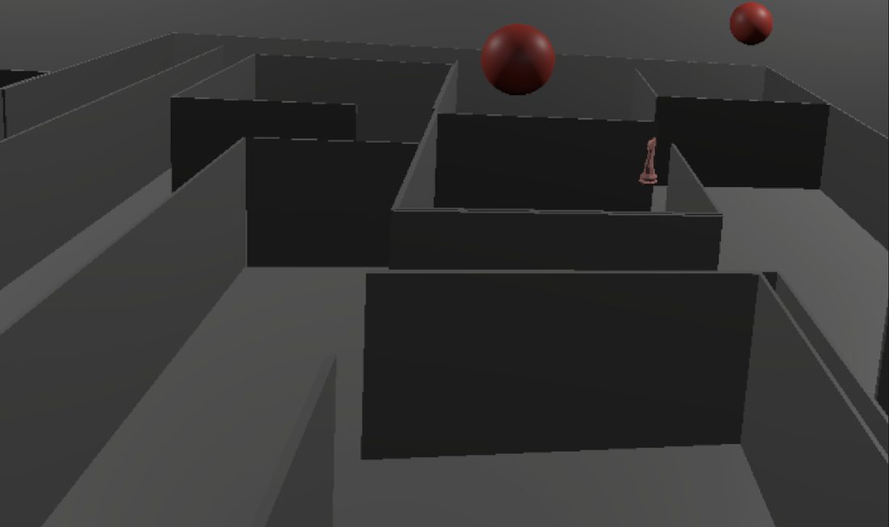
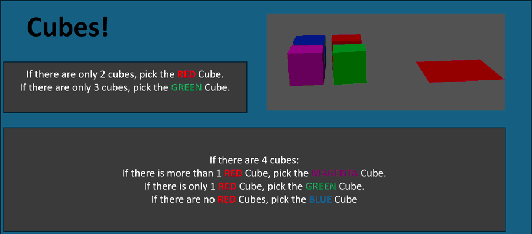
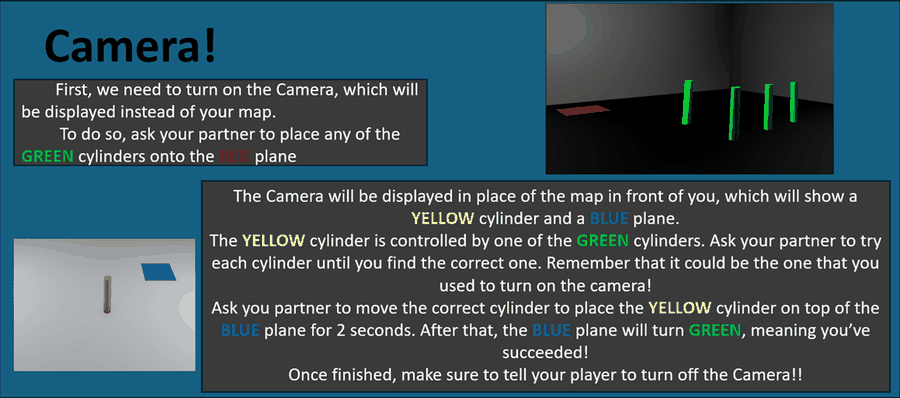
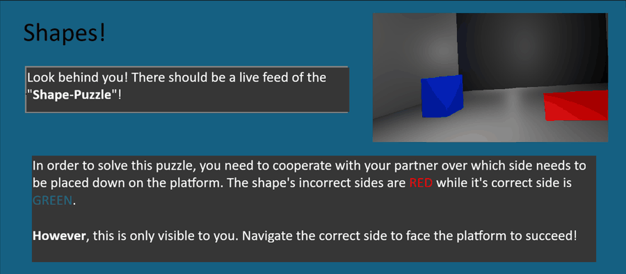
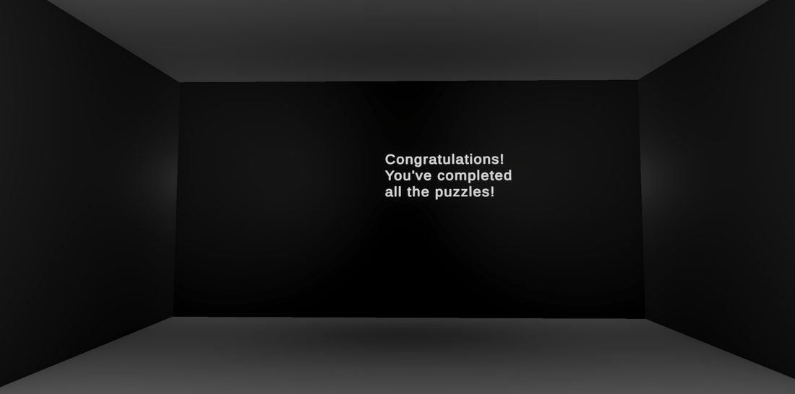

A cooperative VR puzzle game where neither player can see what the other sees, so the only way through is to describe it.
One player is dropped into a maze of seven rooms in VR. The other stands in a small control room holding a shrunken model of that maze and a screen full of manuals. The player in the maze can touch everything and understand none of it; the player in the control room can read every instruction and touch nothing. Three puzzles are hidden in the maze, and neither role can finish one alone.
The asymmetry is also a comfort decision. Full VR movement makes some people ill, so the control room is deliberately static: you stand still, look at a model and talk. It gives someone who is new to a headset a real job rather than a spectator seat.


The world-in-miniature is the heart of it. A button on the pedestal switches it on, the way you would switch on a projection, and it renders a scale model of the maze: the rooms, a knight piece for the other player showing both position and facing, and a red sphere hovering over each room that still holds an unsolved puzzle. Solve one and its sphere turns green, so the control room always knows how many are left without being told.


Beside it, a screen of manuals gives this player everything the other one lacks: what each puzzle is and what the rule is for solving it. They flip through it with buttons below the screen. Every manual uses the same layout, so once you have read one you know where to look in the next.
Each one is built so that at least one player always knows the current state, which is what stops a cooperative game from turning into two people guessing at once.




Everything runs in Photon Fusion 2's shared mode, so both headsets hold the same networked scene and the difference between the roles is what each one is allowed to see and touch.
Rather than splitting the scene across Unity layers, visibility is handled per renderer, which keeps one shared world intact while giving each role its own view of it.
The knight piece in the miniature tracks the other player's position and head yaw over a networked transform, so pointing and saying "turn left" actually means something.
The hidden-room views are render textures piped into the control room, which is what makes the Camera and Shapes puzzles possible: the feed is the only way that information crosses between the two roles.
Puzzles complete on collision with the target plane, with a hold time before it counts, so an object brushing past does not accidentally solve anything.
A run through all three puzzles, cutting between the control room and the puzzle room as each is solved.